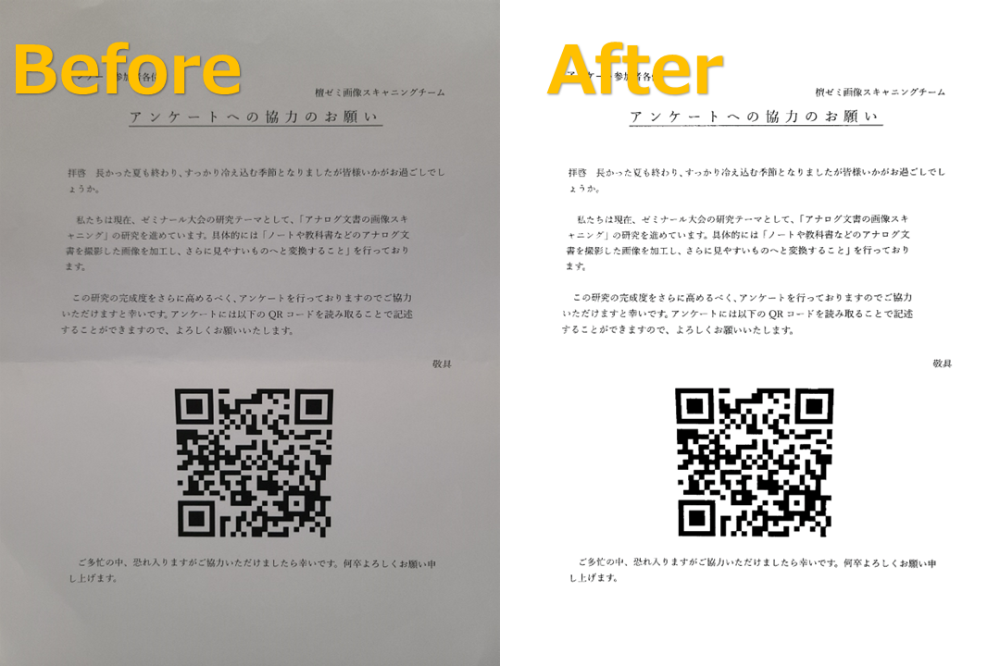

どんなことができるのか？

変換ツールを使うと、影がなくなり、
こんなにきれいになります
注意事項
- HEIC形式には対応していません、iPhoneをお使いの方はご注意ください。
- 幅が3024を超える画像は、幅を3024に補正するようになっています。
- 画像によってはうまく補正できない場合もございます。ご容赦ください。
- カラー画像は白黒画像になります。ご容赦ください。(色の形式はRGBのままです)
- 当サイトは完全無料で利用することができます。ご安心ください。